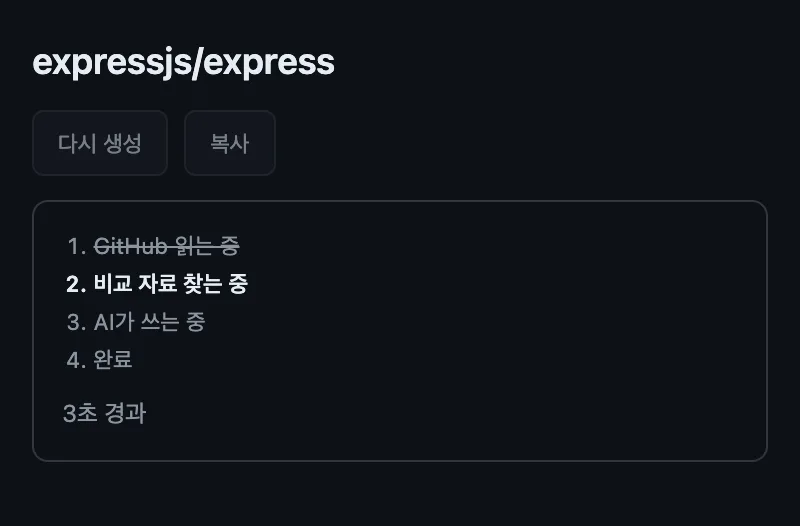
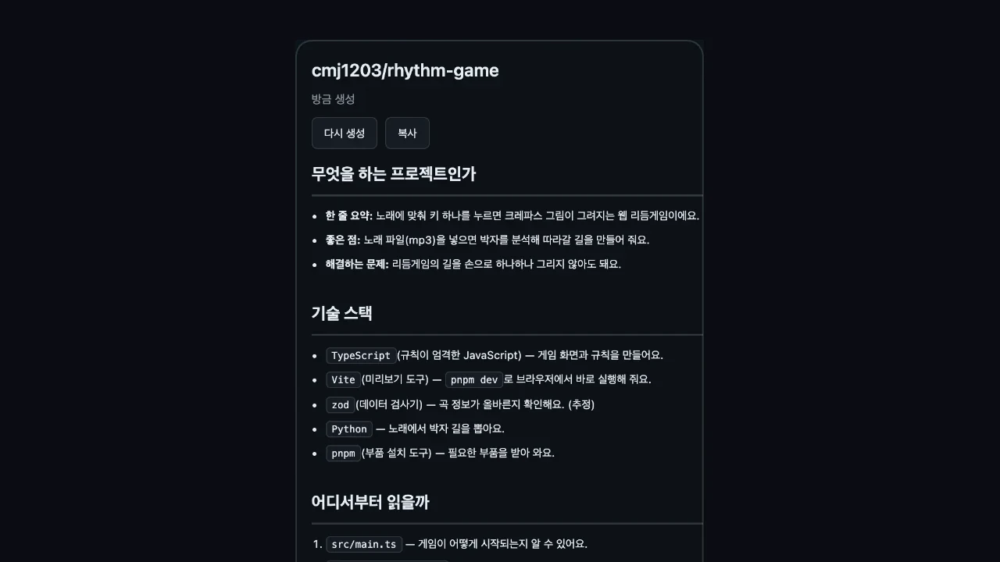
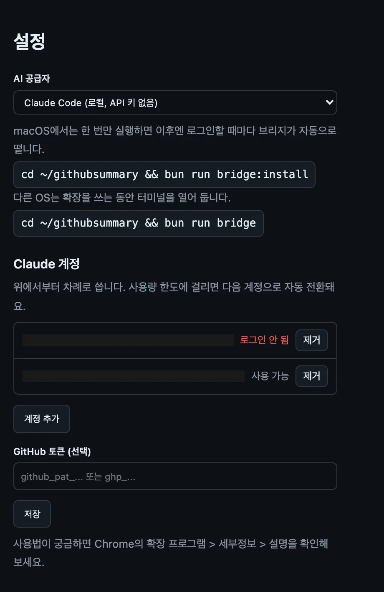
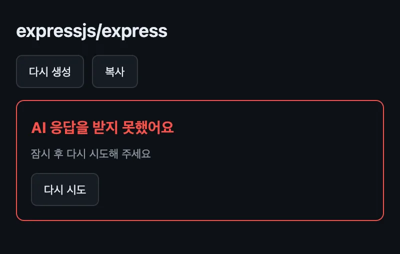

아이콘 한 번
github.com의 레포 페이지에서 툴바 아이콘을 누르면 사이드패널이 열리고, GitHub 읽는 중 → 비교 자료 찾는 중 → AI가 쓰는 중 → 완료 순서로 진행돼요. 같은 레포를 다시 열면 저장해 둔 개요가 바로 떠요.

Chrome 확장
Chrome · Edge · Brave · Arc
GitHub 저장소의 README와 폴더 구조를 읽고, 어떤 프로젝트인지 한국어로 쉽게 알려 주는 Chrome 확장이에요.

무엇을 만드는 도구인지, 가져다 쓸 수 있는 기능을 짧은 구로 요약해요.
AI가 고른 비슷한 도구의 공식 README를 최대 2개 읽어 대조하고, 근거가 된 링크를 붙여요.
매니페스트와 언어 통계에서 확인된 기술만 역할과 함께 적어요.
최상위 폴더부터 12행 이내 표로 정리하고, 테스트·CI 폴더는 '처음엔 생략 가능'으로 묶어요.
그대로 붙여 넣을 수 있는 작업 요청을 2~3개, 작은 일부터 순서대로 써요.
github.com의 레포 페이지에서 툴바 아이콘을 누르면 사이드패널이 열리고, GitHub 읽는 중 → 비교 자료 찾는 중 → AI가 쓰는 중 → 완료 순서로 진행돼요. 같은 레포를 다시 열면 저장해 둔 개요가 바로 떠요.

Claude Code(로컬 브리지, API 키 없음) · OpenAI · Anthropic 중 하나를 골라요. Claude 계정을 여러 개 넣어 두면 한도에 걸릴 때 다음 계정으로 자동 전환돼요.

제목 한 줄과 원인 한 줄, 단추는 하나까지만 둬요. AI 쪽만 실패했으면 다시 시도를 눌러도 GitHub를 다시 읽지 않아요.

서버 없이 확장 안에서만 돌아요. 레포의 README·파일 트리·루트 매니페스트를 GitHub API로 읽고(소스 파일 내용은 읽지 않아요), 고른 AI에게 보내 한국어 개요를 받아요. Claude Code 모드는 127.0.0.1에만 열린 로컬 브리지를 거치고, 브리지는 처음 연결한 확장 하나에만 응답해요. 받은 마크다운은 DOMPurify로 거른 뒤에 화면에 넣어요.